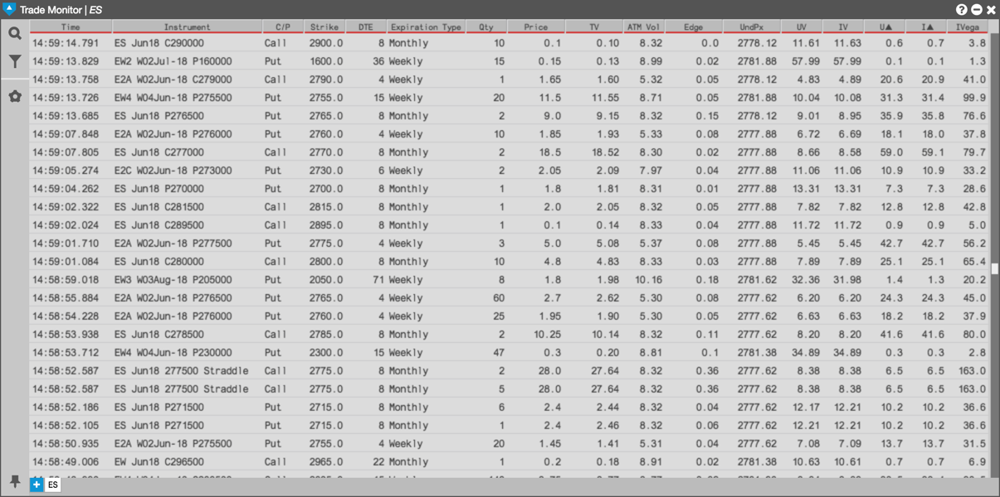

Viewing options trade data
The Options Trade Monitor widget keeps a running record of trades for instruments in a product family displayed in reverse chronological order.
Note: You can access historical trade data by scrolling to the bottom of the widget screen. The Options Trade Monitor widget maintains and displays a history of trade data.
- Each new entry is added to the top of the list, causing the widget screen to auto-scroll downward.
- If you manually scroll through the list to review older data, auto-scroll turns off.
- A red line at the top of the widget screen indicates you can scroll up to view additional information.
- To return to auto-scrolling, scroll to the top of the widget screen.
